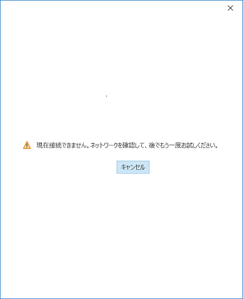
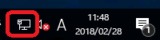

現象
Windows OS の NCSI によりインターネット接続性がないと判断されている場合、Edge や Internet Explorer などのブラウザによるインターネット上のコンテンツ参照が可能であっても、Outlook による先進認証が失敗します。
多くの場合、以下の通り「現在接続できません。ネットワークを確認して、後でもう一度お試しください。」というメッセージのダイアログが表示されます。

NCSI がインターネット接続性なしと判断している場合、ライセンス認証や “Office へサインイン” など Office 共通の動作が失敗する場合もあります。
本現象の特徴として、端末ごとに発生状況が異なっていたり、ネットワーク構成の変更などの変化点と事象の発生時期が一致しないなどがあり、切り分けが難しい傾向があります。
原因
先進認証においては Azure AD などインターネット上のサービスへのアクセスが必要となります。
このため、Outlook を含む Office アプリケーションでは先進認証実行時に Windows OS の NCSI によるインターネットの接続性を確認するロジックが存在します。このロジックにより、インターネット接続性がないという応答が NCSI から返った場合、先進認証ができないと判断され認証処理が中断され、結果的に認証が失敗します。
これは Office アプリケーションが先進認証を使用する際に発生する固有の動作です。
この動作は変更する方法がありません。
NCSI のインジケーター
以下の画像の赤枠内にあるネットワーク接続性を示すインジケーター (小さなアイコン) も NCSI の機能の一部です。

こちらのアイコンでインターネット接続性が無い表示となっていると、多くの場合前述の現象が発生します。
NCSI によるインターネット接続性確認の動作
Windows OS の機能である NCSI がどのようにインターネット接続性を判定しているかについては以下の技術情報で公開されています。
上記技術情報内でも言及されている通り、弊社は NCSI のアクティブ プローブ、パッシブ プローブの無効化を推奨しておりません。
また、無効化により Office による先進認証時の失敗を回避することはできません。
前述の通り、NCSI は Windows OS の機能で Exchange Online に特化したものではありません。
このため、システム管理者は Office 365 の URL と IP 一覧に記載されている Microsoft 365 向けの通信以外にも、NCSI の接続先を考慮しなくてはならないケースがあります。
NCSI の接続先は以下の通り Windows 10 の接続ポイントとして公開されています。
https://docs.microsoft.com/ja-jp/windows/privacy/manage-windows-1903-endpoints
※ 上記ページは左ペインからご利用のバージョンを選択してご参照ください。
Outlook で問題が起きた場合の有効な対処方法
問題が起きていない端末があるからと言って、人為的に問題の起きていない端末と同じ状態で動作をさせるように仕向けることは現実的ではありません。
事例から確認できている情報として、以下のような対処が有効です。
A. Netsh コマンドによる Winhttp のプロキシ設定を見直す
Outlook は独自のプロキシ設定を持たず、Winhttp の通信を行う場合も Internet Explorer のプロキシ設定を参照します。
Outlook 単体の動作としては、Internet Explorer で正しくプロキシの設定が行われていれば、Netsh コマンドで設定可能な Winhttp のプロキシ設定を考慮する必要はありません。
一方で、Windows OS の NCSI によるインターネット接続性の確認においては、Netsh コマンドで設定可能な Winhttp のプロキシ設定が参照されるシナリオがあります。
このため、Outlook による先進認証やライセンス認証の動作に Netsh コマンドで設定可能な Winhttp のプロキシ設定が間接的に影響を与える場合があります。
Internet Explorer ではインターネットに接続できているにもかかわらず、NCSI のアイコンがインターネット接続性無しの状態になっていたり、冒頭でご紹介したダイアログによる認証失敗の事象が Outlook で発生している場合、Netsh コマンドで設定可能な Winhttp のプロキシ設定で NCSI のアクティブ プローブの通信先に接続可能なプロキシを指定することにより事象が解消する事例が非常に多くなっていますので優先的にご確認ください。
コマンドの実行例
管理者としてコマンド プロンプトを起動して以下の例のように実行します。
Winhttp のプロキシ設定を確認する
1 | netsh winhttp show proxy |
Winhttp のプロキシ設定を行う
1 | netsh winhttp set proxy proxy-server="proxy.contoso.com:8080" |
Winhttp のプロキシ設定をリセットする
1 | netsh winhttp reset proxy |
Winhttp のプロキシ設定に Internet Explorer のプロキシ設定をインポートする
1 | netsh winhttp import proxy source=ie |
本設定は pac ファイルの使用をサポートしていない点についてご注意ください。
設定の配布は以下でご紹介しています。
B. ネットワーク関連のサービスが正常に起動しているか確認する
既定で自動実行となっている例えば以下のようなネットワーク関連のサービスが停止している場合、NCSI の接続性確認が失敗します。
1 | DHCP Client |
サービスの状態を確認して、上記サービスが起動していない場合は起動します。
C. デフォルト ゲートウェイに到達できる IP アドレスが設定されているか確認する
NCSI は、厳密には Network Location Awareness (NLA) と呼ばれる Windows OS によるネットワーク接続性管理の機能の一部です。
NLA ではネットワーク接続性の確認の一つとして、デフォルト ゲートウェイへの疎通を確認する動作を行います。
クライアント PC のネットワーク設定でデフォルト ゲートウェイに疎通不可の IP アドレスが設定されている場合、この影響を受けて Outlook や OS によるネットワーク接続性のチェックに影響を及ぼします。
このため、デフォルト ゲートウェイには疎通可能なIP アドレスを設定ください。
D. プロキシによる認証要求を行わないよう構成を見直す
以下の技術情報でご紹介しておりますように、プロキシが認証要求を行う環境においてはNCSI による接続性確認が影響を受ける場合があります。
プロキシ側の設定で、NCSI が接続性チェックに使用する接続先へのアクセスに対して認証要求を行わないように制御するか、プロキシを介さずに直接接続が可能な環境ではプロキシをバイパスする構成に変更することをご検討ください。
本情報の内容 (添付文書、リンク先などを含む) は作成日時点でのものであり、予告なく変更される場合があります。